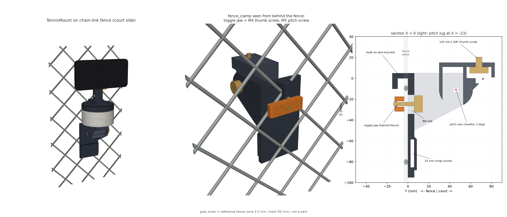

ERR_01 · STORAGE_FULL
拍一场，手机多出好几个 G
传 iCloud，iCloud 也满了。录像躺在相册里，没人看、删又舍不得。
[ CROWDFUNDING · 预热中 · 2026.12.01 20:00 上线 ]
边拍边上云，手机一个 G 都不占。
每一拍自动识别正手、反手、发球，算出你的引拍节奏；自己练的时候，耳机或手机里有个能选性格的教练实时提醒。
跟拍支架可选——挂在围网上，它会一直把你留在画面中间。
拖拽旋转 · 滚轮缩放
00 / WHY
ERR_01 · STORAGE_FULL
传 iCloud，iCloud 也满了。录像躺在相册里，没人看、删又舍不得。
ERR_02 · NO_FEEDBACK
一个小时的录像，要自己快进、截图、比对。问题是"引拍晚了 0.15 秒"，肉眼根本看不出来。
ERR_03 · NO_COACH
同一个错误连犯二十拍，等回家看录像才发现。练球的那一个小时已经白练了。
01 / ZERO-STORAGE
每 60 秒切一段，录完立刻直传火山引擎对象存储；服务端校验大小一致才删本地，不会丢片。骨骼在手机上实时算好，跟着视频一起上云，到家报告已经出来了。
模拟 1080p60 HEVC 8 Mbps · 每段 60 s ≈ 60 MB · 上行 12 Mbps（此处 60 倍速）
指标口径：COCO-17 骨骼 · 手机端 Apple Vision 实时 / 云端 RTMW-x 精修，两端同一套算法
02 / VOICE COACH
击球后约 67 毫秒识别出这一拍；同一个毛病五拍里犯两次才开口，两句之间至少隔 8 秒，只在击球后的空档说，不打断下一拍。点下面的按钮试听（用你浏览器的中文语音合成）。
03 / OPTIONAL · AUTO-TRACK
和 App 里同一套逻辑：Vision 检测 30 Hz → α-β 滤波 → 延迟预测 τ=100 ms → 死区滞回 → 梯形速度规划（120°/s, 600°/s²）。右侧是按真实 BLE 协议编码的数据包。
04 / MOUNTING
挂在身后的围网上：通常离底线 5.5–6.4 米、离地 1.6–2.5 米、往下俯 6–13°。这个距离 iPhone 1 倍镜头就能拍下你的全身（约占画面高度 43%），不会被球网挡、不会被球打到，骨骼也最准。挂钩夹三件打印件约 86 克，5° 一档调俯仰，安全系数 7。

OPT_A · 默认
J 形钩挂在钢丝交叉点，背后压条 + 拇指螺丝锁紧；−20°…+10° 俯仰；圆立柱（Ø30–60 mm）改用 25 mm 绑带。随底座附赠，也开放 STL。
OPT_B · 选配
夹在围网立柱或顶部横杆（Ø15–60 mm），最稳，适合有风的室外场。
OPT_C · 选配
没有围网的场地用。不加配重约 7.6 m/s 的风就会吹倒，挂 ≥3 kg 配重袋可抗 12 m/s。
05 / HOW
Apple Vision 每秒 30 次提取 17 个关节点，只跟你一个人，远端对手和路人自动忽略。
VNDetectHumanBodyPoseRequest手腕速度峰值确认击球，引拍方向分正反手，手过头顶判发球；同时算出引拍节奏、转肩、随挥、屈膝。
v ≥ 6 躯干/秒 · 67 ms 确认同一毛病五拍里出现两次才开口，按你选的性格说一句不超过 12 个字的话。
persona ∈ {温柔, 开玩笑, 严肃}60 秒一段直传对象存储，校验通过才删本地；云端汇总整场报告，需要时用 RTMW-x 精修。
PUT presigned → verify → delete06 / TEARDOWN
下面是真实的参数化 CAD 装配体（build123d 生成，19 个实体）。拖动滑块拆开它。
07 / SPEC SHEET
08 / OPEN SOURCE
众筹支持者拿到的不只是一台设备，还有完整的固件、iOS App 和参数化 CAD——57 + 64 个单元测试全绿。
// core 1 · 1 kHz 实时控制环
void controlTask(void*) {
for (;;) {
float target = planner.step(cmd.targetDeg, 0.001f); // 限速·限加速度·限位
motor.loopFOC();
motor.move(radians(target));
safety.check(motor, cmd.lastRxMs); // 堵转 / 过温 / 心跳
vTaskDelayUntil(&t, pdMS_TO_TICKS(1));
}
}func onDetection(box: Box, frameTime: TimeInterval) {
let e = atan((box.midX - 0.5) * 2 * tan(hfov / 2))
let mountAtFrame = history.angle(at: frameTime) // 用拍这一帧时的角度
filter.update(mountAtFrame + e, at: frameTime)
var cmd = filter.angle + filter.velocity * latency.tau
cmd = framing.apply(cmd, current: link.angle) // 死区·滞回·引导留白
link.sendTrack(target: cmd, maxSpeed: 120)
}# 全参数化：量完卡尺改一行，重新生成 STL
BASE_OD = 84.0 # mm
BEARING = (40.0, 52.0, 7.0) # 61808
MOTOR_BOLT_PCD = 19.0 # VERIFY with calipers
PAN_STOP_DEG = 155
CELL = (21.7, 70.5) # 21700 flat-top
with BuildPart() as base_shell:
Cylinder(BASE_OD / 2, BASE_H)
offset(amount=-WALL, openings=base_shell.faces().sort_by(Axis.Z)[-1])## CTRL · App → Mount · 8 bytes · ≤30 Hz · little-endian
| off | type | field |
| 0 | u8 | mode | 0 IDLE · 1 TRACK · 2 MANUAL · 3 HOME
| 1 | u8 | seq |
| 2 | i16 | value | target angle, 0.01°
| 4 | u16 | max_speed_dps |
| 6 | u16 | reserved |
## STATE · Mount → App · 14 bytes · notify 50 Hz
t_ms:u32 angle:i16 vel:i16 batt:u8 flags:u8 temp:i8 last_seq:u8 state:u8 fault:u810 / BACK IT
不买支架也能用：手机放在任何三脚架或围网夹上，照样上云、出报告、有教练。众筹目标 ¥300,000，上线后 48 小时内为早鸟价，以下为预热价，上线时以众筹平台为准。
FREE
¥0
PRO
¥30/月 · ¥268/年
MAX
¥98/月 · ¥888/年
LV.1 · CLOUD ONLY
¥588¥888
限量 2000 份
预约 →LV.2 · SUPER EARLY BIRD
¥1,199¥1,787
限量 500 台
锁定资格 →LV.3 · HACKER
¥599¥767
限量 300 套
预约 →LV.4 · DOUBLES
¥1,899¥2,686
限量 300 套
预约 →11 / ROADMAP
跟拍支架的结构、电路、固件、App 全部完成。
✓ DONE边录边传、云端报告、实时语音教练、围网挂钩夹。众筹上线。
● IN PROGRESS标定击球与教练阈值；豆包真人音色、精彩片段自动剪辑。
RTMW-x 高精度复盘；教练可查看学员报告、标注重点。支架 DVT 与认证。
支架按档位发货；Ambodi 戒指"网球模式"测挥拍速度。
12 / FAQ
能。App 才是核心：手机放在任何三脚架、围网夹上，照样边拍边上云、出报告、有语音教练。支架只是让你跑动时始终在画面中间，适合想要更好画面的人。
存在国内的火山引擎对象存储（上海），私有存储桶，只能用你账号签发的短时链接访问；可以一键删除整场。分享报告默认只分享骨骼动画，不分享原片。
没耳机就用手机扬声器——每句话都在 12 个字以内，2–4 米外听得清。跟教练上课时切到"上课模式"，手机不说话，只录像和出报告。自己练的时候，骨传导耳机（比如韶音）体验最好。
手机最多缓存 2 GB 还没传完的片段，超出时自动降码率；回到 Wi-Fi 后自动补传。只有云端确认收到的片段才会从手机删除，不会丢。
首发只支持 iPhone（iOS 17+）：Apple Vision 的人体检测效果和发热控制都更稳。支架端协议完全公开，安卓 App 在路线图里，也欢迎社区先做。
iOS 不允许 App 直接和非 MFi 认证的 USB 设备通信；唯一可行的"伪装成 MIDI 设备"方案又会让手机反过来给支架供电。所以线只负责给手机充电，指令走 BLE——每秒 30 个 8 字节的包，延迟 15–30 ms，完全够用。
不会。开拍前点一下自己锁定，之后每帧按位置重叠、距离和体型打分，画面高度不到 12% 的人（远端对手、路人）直接忽略；跟丢 1 秒后在原方向附近慢速搜索，3 秒后回中等你。
DockKit 需要 MFi 认证，众筹阶段先用自研 BLE 协议保证开放。量产时我们计划申请 MFi 并同时支持 DockKit，让系统相机也能直接跟拍。
App 实时监测 iPhone 发热：偏热时降低识别频率，严重时降帧率并暂停充电。托架背面有通风槽，建议在阳光下配一把遮阳伞。
v1 针对"底线后方跟拍自己"优化。双打套装支持两个机位同时拍；自动俯仰轴和多人切换在后续版本里。
硬件众筹存在延期风险。我们已完成全部设计和代码，并公开 BOM 与 CAD；主要风险在注塑开模和认证周期。若项目未达目标，全额退款。
13 / JOIN
留下邮箱，锁定早鸟资格。我们只发上线提醒和关键进展，不发广告。